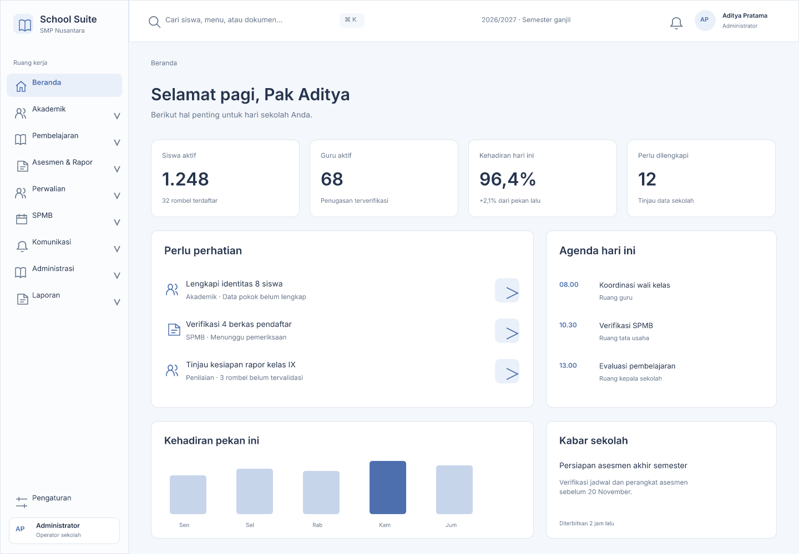
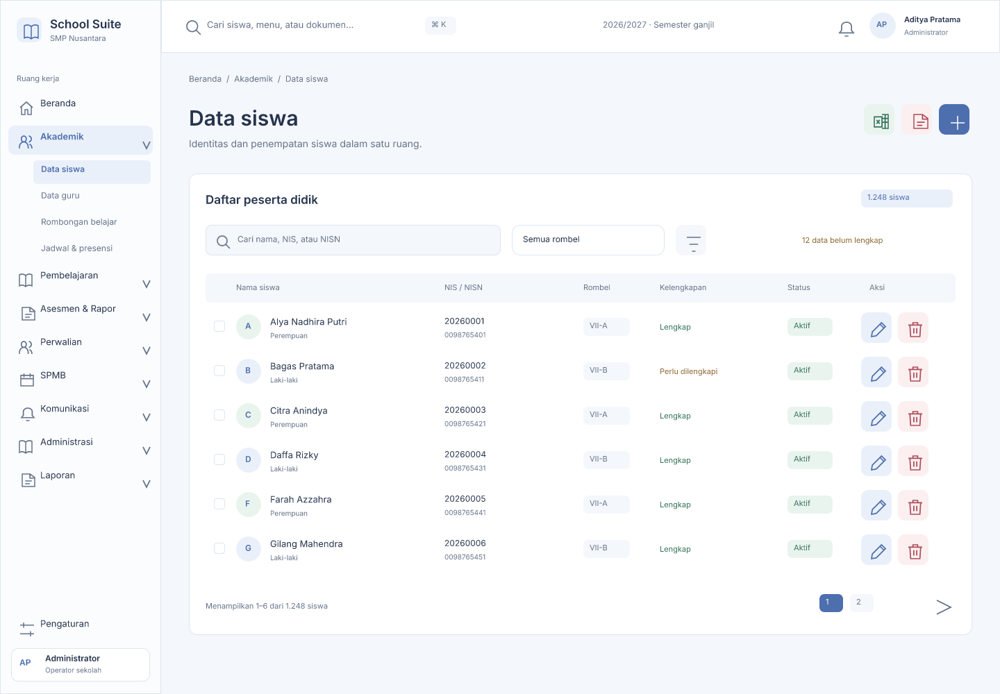
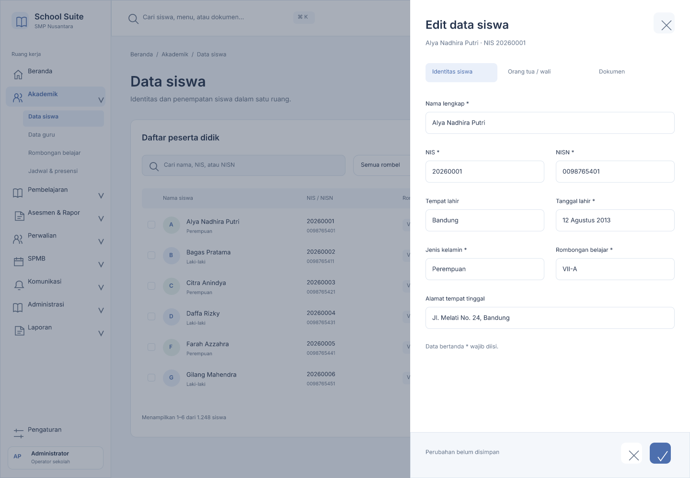
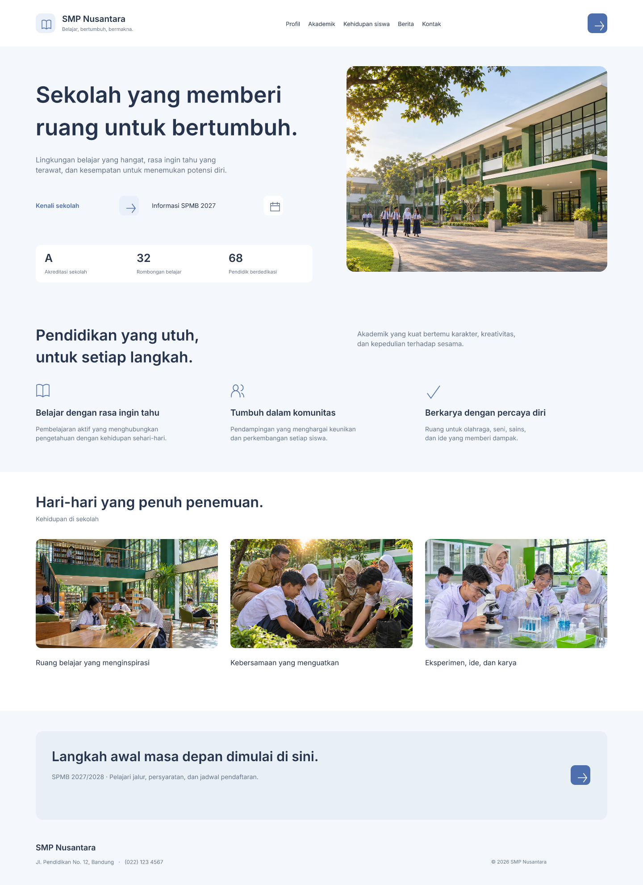
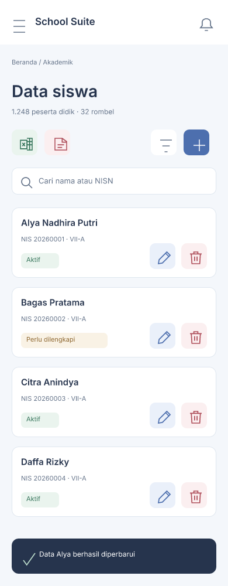
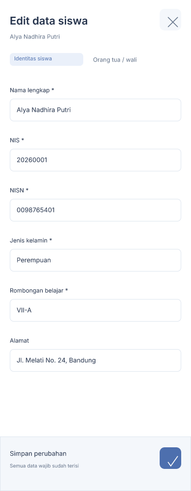
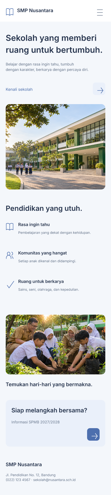
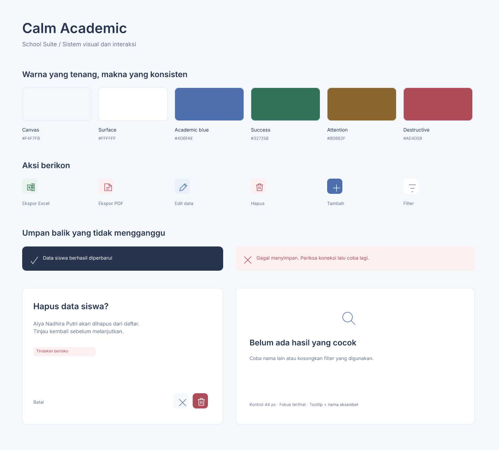

School Suite · Usulan desain 2026. Delapan artboard dari FigCraft, dengan alur direktori siswa, form overlay, landing sekolah, dan tampilan mobile.








Data dan identitas merupakan ilustrasi. Preview adalah gambar statis; buka file FigCraft untuk layer dan alur prototype. Rincian perilaku yang disimulasikan tersedia di README.